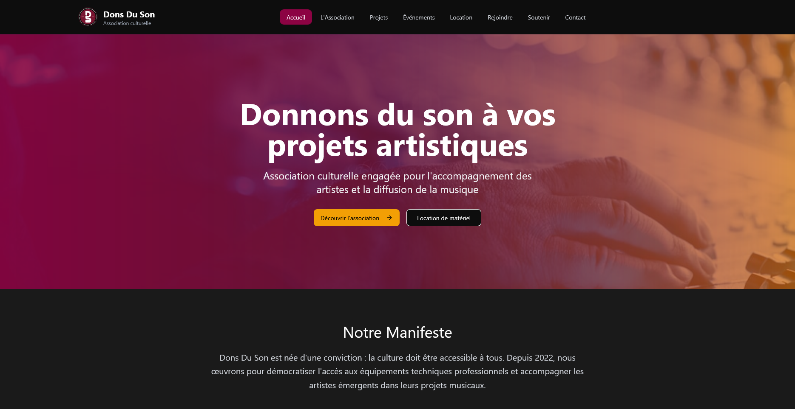

Association Dons du Son
A modern, high-performance web platform built for the non-profit association Dons du Son. Designed from the ground up to elevate their digital presence, educate the public about auditory health, and empower non-technical team members with a bespoke homemade Headless CMS for effortless updates.

01 Project Overview & Objectives
The Dons du Son association works tirelessly to advocate for auditory health, organize community music initiatives, and coordinate charity equipment donations. Their previous communication strategy lacked a central digital touchpoint where supporters, partners, and event attendees could easily access verified information, event schedules, and donation options.
I was entrusted with full ownership of the project from conception to deployment. The core mission was twofold: construct an elegant, fast, and accessible public interface, and provide an intuitive content management mechanism so association leaders can update content without writing a single line of code.
02 The Process & Methodology
To ensure the final product fulfilled both user expectations and technical durability, the project followed a structured 4-phase agile methodology:
Requirements Analysis
Conducted stakeholder interviews with association volunteers to identify essential content types (announcements, concert schedules, team bios, press kits) and defined the accessibility standards.
Design Systems
Prototyped user flows in Figma focusing on high-contrast readability, responsive breakpoints, and seamless call-to-actions for memberships and event attendance.
React + Headless CMS
Built modular components using React and TypeScript for strict type guarantees. Engineered a custom lightweight Headless CMS layer separating content schema from view logic.
Optimization & Handoff
Tuned Core Web Vitals, automated continuous deployment pipeline with Vercel, and produced user-friendly documentation for the board members.
03 Technical Architecture & The Homemade CMS
A central challenge was empowering non-developers to edit website content without introducing costly third-party SaaS subscriptions or heavy database setups that would require continuous maintenance.
I engineered a bespoke homemade Headless CMS engine. The system reads structured JSON schemas and renders dynamic content blocks at runtime. When content needs updating, editors use a clean, validated administrative interface that updates the data layer directly, triggering immediate site updates without risk of layout breakage.
04 Key Features & Highlights
- Bespoke Homemade Headless CMS Empowers association organizers to independently update text, events, and media without touching code.
- 100% Responsive & Cross-Platform Flawlessly adapts to smartphones, tablets, laptops, and ultra-wide desktop monitors.
- Type-Safe Component Ecosystem Built with TypeScript to eliminate runtime bugs and ensure maintainability.
- Accessibility & High Contrast Designed following WCAG color contrast and semantic HTML guidelines for maximum legibility.
05 Technologies Used
- React.js
- TypeScript
- Tailwind CSS
- Custom Headless CMS
- Vercel
- Git & GitHub
- Figma
- Responsive Design